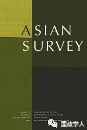
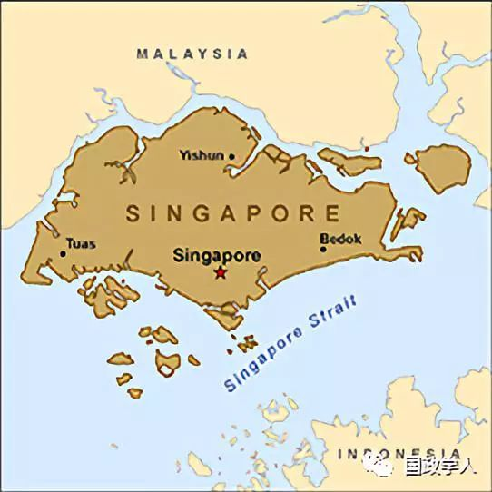
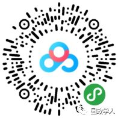

收录于合集

简 介
**
**
【作者】 DanitaCatherine Burke是南丹麦大学战争研究中心玛丽居里研究员，André Saramago为葡萄牙贝拉地区大学国际关系助理教授
【编译】 周雨橙
【审核】 陈成龙 高嘉琳
【来源】 Asian Survey,Vol. 58 No. 5, September/October 2018; (pp. 920-941)

【期刊简介】
亚洲调查是美国唯一同类学术期刊，全面回顾南亚、东南亚和东亚国家的当代国际关系。期刊涵盖范围包括外交，裁军，导弹防御，军事和现代化，种族，民族暴力，经济民族主义，大选和全球资本主义等。
新加坡如何利用教育这种软实力参与北极合作？
Singapore’sUse of Education as a Soft Power Tool in Arctic Cooperation

内容提要
作者认为，利用教育手段在国际上投射软实力是新加坡的拿手好戏。新加坡在东南亚提供教育补助甚至免费受教育的机会已经行之有年，如今，新加坡在北极地区有利可图，其便开始提供北极原住民教育机会，以作为新加坡参与区域治理的一种方式。
文章导读
在国际事务的讨论中，多数情况下以硬实力为主，因而造成对小国外交的忽视。事实上，一些小国，例如新加坡，虽然在硬实力资源方面不具优势，却善于制造吸引力，惯用软实力，创造属于自己的方式参与国际政治的互动。2013年，新加坡被批准成为北极理事会（Arctic Council）的观察员国。在理事会中，可以逐渐清晰地观察到，新加坡通过软实力影响与之相关的国际环境。例如，新加坡通过建立新加坡- 北极理事会永久参与者合作–镜子计划案（Singapore-Arctic Council Permanent ParticipantsCooperation Package），提供教育机会给合乎规定要求的原住民永久参与者（以下简称原住民）。这种方式实际上在新加坡过往的外交经验中有迹可循，新加坡官方藉由向原住民提供教育机会此种既定模式，培养其在国际上的软实力。
在此，该篇论文要处理的主要问题是：新加坡是如何藉由积极参与北极理事会，扩展其作为国际航运枢纽的软实力？作者认为，分析该问题可采Alan Chong所提出的领导力自内而外（leadership inside- out，LIO）模型加以检视。该模型认为，利用国家的“文化印记”和其他“社会化因素”，可以在国际上将自身描绘成一种值得其他国际行为者仿效和尊重的独特模式，其目标是引起他者的共鸣，并支持该国的生存方式，以避免伤害。
1 作为小国的新加坡
作者在这部分讨论了新加坡属于小国的原因。相较于印度尼西亚和马来西亚两大邻国，新加坡的人口和国土面积显示他是区域内特别脆弱的小国。但是新加坡的经济实力和外交能力让人难免对其小国的定位产生怀疑。不过，由于新加坡长期以来在外界成功建构起小而富的国际形象，“小”使得各国对其警惕性较低，“富”为其提供参与国际调停、指导经济发展与政府管理方法的正当性，利于在过程中传播软实力，而隐藏其潜在动机。新加坡世界一流的教育口碑和地位则为其投射软实力提供基础。
2 软实力与教育
作者在这部分援引奈（Joseph Nye）等学者的软实力理论与概念，他们指出软实力资源的可用性受到诸多限制，并且其效用充满不可预测性。国家投射软实力的困难之处在于，众多关键资源并不在政府的掌控之中，成效很大一部分取决于受众是否愿意接受。软实力发挥效用需要长时间的发展，缺乏立见性，并且意图和结果之间的因果关系也不清晰。许多研究指出教育常被视为典型的“文化和政治理念”的传播载体，算是软实力传播的一个基本方面。不同于宗教或政治价值可能展现的文化独特性，教育通常会被认为是种“普世价值”，许多国家的大学和研究所鼓励学生培养全方位思考的能力,自由交换观点，接受多元文化价值。此外，不只是教育本身，整个受教经验其实都是传播软实力的重要资源。例如，许多留学生在求学过程中融入当地的生活，感受和摸索当地社会的价值、信仰和理念，学成后将留学国的观点带回祖国，同时也更能站在留学国的角度思考问题。
**3
** 新加坡的外交途径
新加坡的外交政策根植于自身所感受到的脆弱性，其糅合了现实主义和自由主义的元素。一方面在国防政策上追求传统安全观的有效吓阻，另一方面则赞同多边主义和国际合作。在前外交部长拉惹勒南的领导下，新加坡成功转变为全球城市，其社会和经济发展模式因而成为外交政策中的关键，他善于将自己的成就描绘为各国可以仿效，而且可以通过与新加坡建立互赖和互利的关系成为共同发展的一份子。新加坡通过说服和吸引他国接受其理念，让其他国家的需求符合其利益。这种战略在新加坡与区域内国家建立互赖关系，以及新加坡合作计划（Singapore Cooperation Program）中都可得到例证。新加坡的对外援助并不是单纯的金援，而是注重在提供教育和建立能力的计划上，这种方式使得新加坡培养了一群学者和专业人士，进而形成一个世界范围的社群，他们多少会对新加坡产生一些好感。
**4
** 新加坡参与北极事务
作者认为，新加坡北极利益的关键点是经济和海运发展的前景。新加坡担忧北冰洋货运航线的开发愿景可能影响到其原本的商业利益，致使新加坡竞争力下滑。因此，新加坡希望能够通过参与北极事务的讨论，避免边缘化，同时获取新一轮北极发展情况的相关情报。新加坡在北极理事会中最明显的贡献是为原住民提供免费的教育机会，利用合作过程中的游学、教授技术课程或培训等方式，与学员分享新加坡在海洋管理等方面的经验。原住民在北极理事会中的参与权多于观察员国，可以在理事会内建立更多的人脉网，取得更多资源，同时具有一定的权力影响理事会议程，甚至可以否决特定提案。此外，原住民在区域中的角色呈现越来越活跃的趋势，尤其是关乎经济或科技方面的利益时，未来原住民所发挥的作用可能会越来越大。因此新加坡未雨绸缪，通过提供免费教育计划与原住民建立友善关系。教育计划能够帮助原住民提升他们的组织能力，使他们能够顺利参与北极理事会的各层级会议。对于新加坡而言，吸引原住民到新加坡受教，易于新加坡接近北极地区的关键行为者；另一方面，原住民学员能够接触新加坡文化、价值、理念以及日常生活。在这个过程中可以逐步提升新加坡软实力的影响程度，进而形塑北极地区的政治发展，以确保自身利益。
**5
** 结 论
作者认为新加坡一贯擅长将其脆弱性转化为其优势，新加坡利用教育投射软实力，建立了一个正面的国际形象。过去，新加坡通过教育，社会化东南亚国家的精英，从而降低其在区域内可能受到的安全威胁。取得成效后，新加坡试图将此模式扩展到其他区域。在本文的北极案例中，新加坡选择提供免费教育给资源相对匮乏的原住民，而原住民则是北极理事会中有实权的参与者。新加坡的愿景是，通过教育让这些来新加坡求学的原住民受到新加坡文化、理念、价值的影响，以期他们未来能够在理事会内为新加坡利益发声。不过，作者亦指出目前的合作计划开办时间较短，参与人数较少，新加坡是否能够如愿以偿，仍需时间等待与观察。
本文由国政学人微信公众平台独家首发
** 扫描下方小程序码查看原文p df**

更多阅读
【地区秩序】阿米塔夫·阿查亚：权力转移还是范式变化？中国崛起与亚洲新兴安全秩序 | 国政学人
国政学人 （ID：guozhengxueren)
为方便学人及时阅读高质量文章
别忘把国政学人设置 星标 哦~